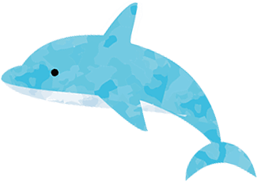

アクセス
周辺マップ
〒253-0000 神奈川県茅ヶ崎市東海岸北5丁目 15-32
アクセス方法
駐車場・駐輪場のご案内
当院の敷地内に駐車場（3台分）と駐輪スペースがございます。
周辺には有料駐車場もございます。
公共交通機関のご案内
電車でお越しの方
JR茅ヶ崎駅から徒歩5分です。
南口を出て、雄三通りをまっすぐ進んでください。
右手に「湘南こどもクリニック」の看板が見えてきます。
バスでお越しの方
神奈川中央交通「会館前(茅ケ崎市)」から徒歩2分です。
雄三通りを茅ヶ崎駅に向かてまっすぐ進んでください。
左手に「湘南こどもクリニック」の看板が見えてきます。
